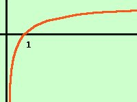

|
Risolvere la seguente disequazione logaritmica log (x2 - 5x + 6) < log (x-4) Come prima cosa poniamo la condizione che gli argomenti dei logaritmi siano positivi x2 - 5x + 6 > 0 x - 4 > 0 che equivalgono a x > 4 Siccome la base non e' indicata devo supporre che il logaritmo sia a base e cioe' a base maggiore di 1 Trasformiamo ora la disequazione nella forma log(espressione) < 0 Porto tutti i termini prima del maggiore log (x2 - 5x + 6) - log (x-4) < 0 e, per i teoremi sui logaritmi, posso scrivere 
2 < x < 3 Mettendo assieme questa relazione con le condizioni per la realta' dei logaritmi ho il sistema x > 4 2 < x < 3 Riporto i dati su un grafico, e prendo i valori comuni a tutte le disequazioni indico i valori accettabili con una linea continua ed indico i non accettabili con una linea tratteggiata Non esistono valori comuni quindi ottengo che non esistono soluzioni "Hem lavràt tant per sensa gnent" Come diceva un mio alunno in dialetto Traduzione:"Abbiamo lavorato tanto per niente" |